Fortinet Enterprise Networking & Security
Daily Study Quiz · 17 November 2026
Twelve documentation-led product lessons, feature-specific diagrams, operational evidence and a 50-question graded examination.
Run Status PARTIAL — final read-back and Pages check pending
The exclusion inventory was published before lesson generation. Twelve unique lessons, twelve SVG diagrams, twelve editable draw.io diagrams and exactly 50 graded questions have been generated. Final report/index read-back and live GitHub Pages verification remain pending at this publication stage.
- 30-day exclusion inventory: 318 historical lesson records across 29 published report artifacts; all 11 required fingerprint fields retained.
- Discovery: admin-guide and Community sweeps completed for all 12 mandatory targets; primary lessons use Fortinet feature/admin documentation, Community links are scenario-only.
- Uniqueness: 12 of 12 candidates passed comparison against the inventory.
- Content: 12 technical lessons, each with configuration mechanics, evidence interpretation, troubleshooting and operational caveats.
- Assets: 12 standalone SVG and 12 editable draw.io files written to GitHub.
- Exam: 50 unique MCQs, four choices each, and 200 per-choice explanations.
- Email: not attempted because email delivery is disabled in this run context.
Today's coverage
FortiGate NAT64/DNS64 · FortiManager firmware templates · FortiAnalyzer Archive/Analytics · FortiSwitch MSTP guards · FortiAP Zero-Wait DFS · FortiNAC Persistent Agent update · FortiNAC-F Dynamic Address Tags · FortiAuthenticator CRL/OCSP · FortiPAM cross-platform migration · FortiSIEM Collector HA · FortiSASE split DNS · Secure SD-WAN TWAMP Performance SLA.
Primary feature mechanics come from Fortinet Administration, Configuration, Security Fabric and feature guides. Community material is used for real troubleshooting context, not as the primary feature specification.
Technical lessons
Lesson 01 · FortiGate
NAT64 with DNS64: synthetic AAAA to IPv4 translation
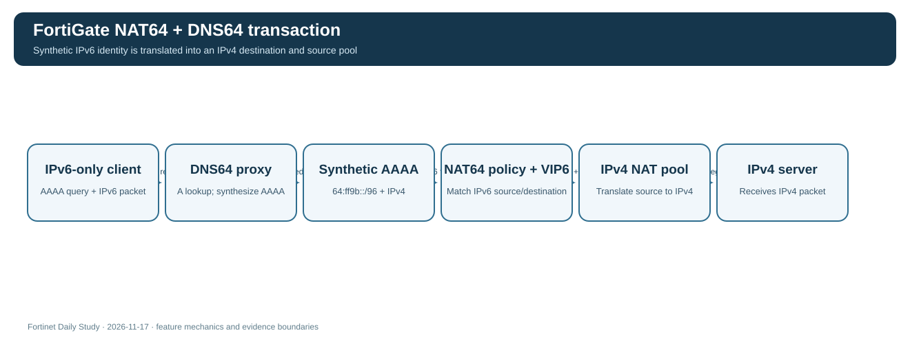
NAT64 allows an IPv6-only client to reach an IPv4-only server. DNS64 is the address-discovery half of that transaction. When a client asks for an AAAA record, the FortiGate DNS proxy can query upstream for an A record and synthesize an IPv6 address by combining the configured NAT64 prefix with the server's IPv4 address. With the default well-known prefix, 172.16.200.55 becomes 64:ff9b::172.16.200.55. The synthetic address is not a native IPv6 address on the server; it encodes the IPv4 destination for the translator.
The forwarding chain has independent objects: DNS proxy on the client-facing interface, DNS64 prefix, an IPv6 VIP (firewall vip6) covering the synthetic prefix, an IPv6 source object, a NAT64-enabled IPv4 IP pool, and a firewall policy with NAT64 enabled. The policy matches the IPv6 source and synthetic destination. The VIP decodes the embedded IPv4 destination; the pool supplies the translated IPv4 source. A DNS response proves only synthesis, not policy selection or forwarding.
config system dns64
set status enable
set dns64-prefix 64:ff9b::/96
set always-synthesize-aaaa-record enable
end
config firewall vip6
edit "vip6"
set extip 64:ff9b::-64:ff9b::ffff:ffff
set embedded-ipv4-address enable
next
end
config firewall ippool
edit "exit-pool4"
set startip 172.16.200.200
set endip 172.16.200.207
set nat64 enable
next
end
config firewall policy
edit 1
set srcintf "port10"
set dstintf "port9"
set action accept
set nat64 enable
set srcaddr6 "internal-net6"
set dstaddr6 "vip6"
set ippool enable
set poolname "exit-pool4"
next
endVerify in order: query AAAA from the client; inspect the DNS64 prefix and proxy binding; confirm the VIP6 range covers that prefix; check the policy counter and NAT64 pool flag; then capture WAN traffic to see IPv4 destination plus the pool source. If always-synthesize-aaaa-record is disabled, DNS64 tries native AAAA first and synthesizes only when absent. That changes address selection globally for affected queries, so do not use it as a substitute for fixing a bad VIP or policy. Finally validate the IPv4 route and return path: successful outbound translation does not guarantee a bidirectional stateful session.
Lesson 02 · FortiManager
Firmware templates: ordered fabric upgrades and stop conditions
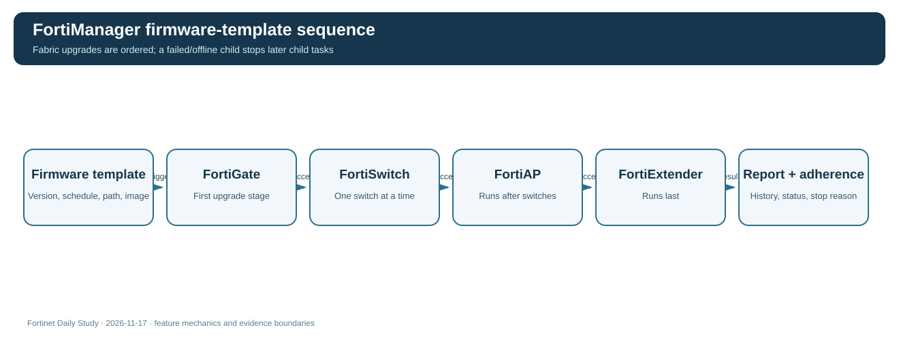
A firmware template is desired-version policy, not merely an image repository. It binds target versions and upgrade details to FortiGate devices and their managed FortiSwitch, FortiAP and FortiExtender fabric. After assignment, FortiManager reports whether each device is compliant with the template. Execution can be manual or scheduled: none, once, daily, weekly or on-board. On-board is persistent enforcement; the guide describes periodic checks (about every ten minutes) and an upgrade when a device joins or drifts from the target. A one-time campaign does not provide that ongoing correction.
The fabric order is FortiGate first, then managed FortiSwitches sequentially, then FortiAP, then FortiExtender. If a device in that sequence is offline, its remaining sequence stops. An offline switch can therefore prevent later AP and Extender tasks behind that FortiGate, while other assigned FortiGate devices may continue. Read the result as a per-device dependency graph, not a single all-or-nothing job.
Preflight the FMWR contract for FortiGate upgrades; FortiManager provides a 24-hour grace period for newly added devices while FortiCare contract data synchronizes. FortiExtender firmware images must be downloaded from Customer Service & Support and imported manually through the FortiGuard module. In a closed network, import every intermediate image required by the recommended upgrade path. “Skip intermediate steps” is not a replacement for a missing image. The alternate-partition option is FortiGate-specific and can require two reboots. The HA option “Only upgrade clusters with all members up” skips a cluster if a secondary is down.
Preview the template, image/platform match, schedule, end-time, device online state and HA members before triggering. Afterward inspect each device's firmware report/history and installed version. A successful API response proves template-object creation only; it does not prove device assignment, upgrade execution or final image. Use a maintenance window long enough for sequential switch upgrades and avoid an end-time that truncates the sequence.
Lesson 03 · FortiAnalyzer
Archive versus Analytics: two data planes and HA range divergence
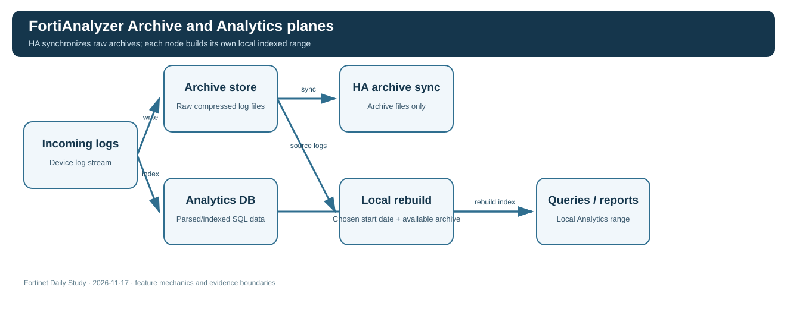
FortiAnalyzer keeps two representations of received logs. Archive stores original compressed log files. Analytics parses fields and inserts/indexes the logs in a local database for Log View, FortiView, Incidents & Alerts and Reports. Archive is the source for recovery and later re-indexing; it is not equivalent to a query-ready Analytics database. A log visible in Archive but absent from Log View can therefore be an indexing/range issue rather than a FortiGate forwarding failure.
Archive and Analytics have separate storage and retention behavior. Analytics consumes more space because it stores parsed fields and indexes. ADOM quotas and retention can trim older data. In an HA pair, Archive files synchronize, while Analytics is built locally on each node from the available archive range at rebuild time. Different rebuild start dates can produce different database sizes and query ranges even when archive synchronization is healthy. Rolled filenames or compressed sizes can also differ; those differences alone do not prove missing logs.
Compare the same device, log type, time window and log IDs on both members. Then inspect each member's oldest/newest archive timestamps, ADOM quota, retention, Analytics rebuild start date and hcache/database use. Before rebuilding, confirm the required raw archive files still exist on both nodes. Rebuild from the same start date during a maintenance window if the goal is equivalent query coverage. A rebuild can purge the current indexed range and repopulate it from Archive, affecting reports and Log View while it runs.
Do not rebuild merely because database sizes differ. A matching archive set is evidence that raw source logs are present; it does not prove the local Analytics indexes cover the same dates. Conversely, an “in-sync” HA badge proves the HA state reported by the cluster, not identical Analytics query results. Use Archive comparison, rebuild-window comparison and Analytics query tests as separate checks.
Lesson 04 · FortiSwitch
MSTP guard roles: protecting root, edge and alternate paths
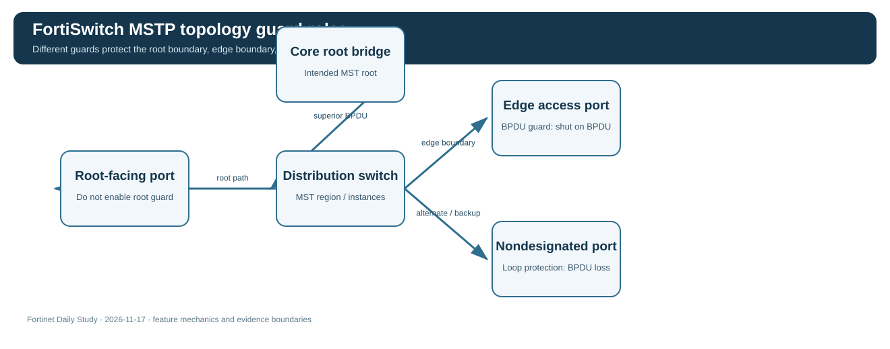
MSTP maps multiple VLANs to a smaller set of spanning-tree instances. Switches intended to share an MST region need consistent region name, revision and VLAN-to-instance mapping. The Internal Spanning Tree carries common control information; per-instance port roles decide which paths forward for each VLAN group. A region mismatch creates a boundary and can produce different topology behavior on opposite sides of a link.
Three protections address different failures. Root guard protects a non-root-facing port from a superior BPDU. When a superior BPDU arrives, the port becomes Root-Inconsistent while that condition persists; do not enable root guard on the actual root port. BPDU guard protects an edge port where an endpoint should never send BPDUs. A received BPDU takes that edge port down for its configured timeout. Loop protection is intended for nondesignated ports such as alternate/backup paths; it reacts to loss of expected BPDUs rather than a superior BPDU.
config switch interface
edit port20
set stp-state enabled
set stp-root-guard enable
next
edit port7
set stp-state enabled
set edge-port enabled
set stp-bpdu-guard enabled
set stp-bpdu-guard-timeout 5
next
edit port48
set stp-state enabled
set stp-loop-protection enabled
next
endFortinet's guide requires STP enabled globally and on the interface for guard features. BPDU guard also requires edge-port enabled. Its default timeout is five minutes; the maximum is 120 minutes. A timeout of zero requires manual reset. Loop protection is disabled by default and should be applied to nondesignated ports, not indiscriminately to every link.
When a port blocks, inspect its role/state and BPDU evidence before removing protection. Root-Inconsistent suggests a superior BPDU on a root-guard boundary; an edge port down after a BPDU suggests BPDU guard; loss of BPDUs on an alternate path suggests loop protection. Confirm region name/revision and VLAN mapping at both ends. A blocked port can mean the topology invariant was correctly enforced, not that STP itself is broken.
Lesson 05 · FortiAP/Wireless
Zero-Wait DFS: pre-cleared channels and radar-event behavior
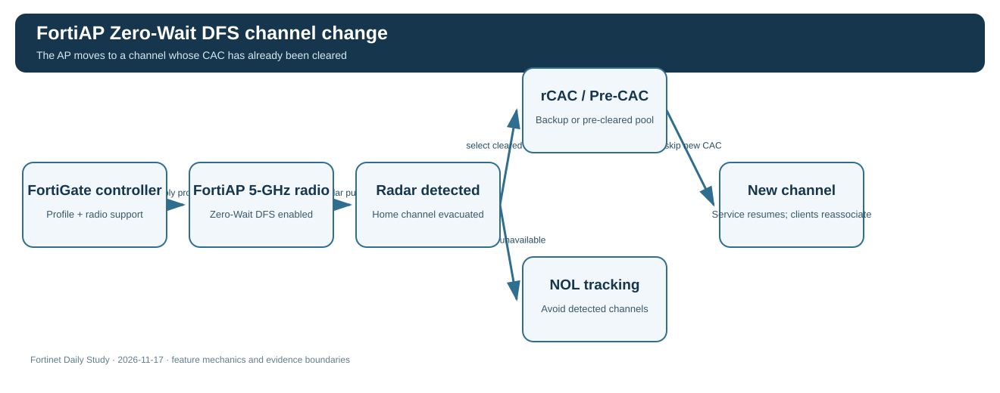
DFS allows 5-GHz radios to use channels shared with radar systems, but radar detection forces the AP to vacate the channel. Under standard behavior, the radio performs a 60-second Channel Availability Check (CAC) on the new channel before resuming service. Zero-Wait DFS reduces that interruption by preparing a channel whose CAC has already been completed. It does not disable radar detection or make an occupied channel legal to use.
Regulatory-domain behavior differs. FCC/MKK uses radio Channel Availability Check (rCAC): the AP pre-scans a backup channel, then moves to it after radar is detected on the home channel. ETSI uses Pre-CAC: the AP scans DFS-configured channels in the background, clearing CAC in advance. After radar, it selects a channel whose CAC state is already clear. These are different preparation strategies, not interchangeable names.
Fortinet documents support for FAP-U platforms and QCA-based FAP-F/G/K models with 4x4 or 8x8 MIMO radios running FortiAP 7.6.3 or later. Enable the setting under the correct 5-GHz radio profile, then apply that profile to the AP:
config wireless-controller wtp-profile
edit "FAP431F-default-ZwDFS"
config platform
set type 431F
end
config radio-2
set zero-wait-dfs enable
end
next
endFrom the controller, run diagnose wireless-controller wlac -c wtp <serial> and confirm zero-wait-dfs is enabled. On the AP, cw_diag -c zwdfs shows rCAC/Pre-CAC state, DFS domain and pre-scanned frequency. During radar events, correlate FortiGate WiFi logs with klog | grep Radar and rcfg | grep nol. The Non-Occupancy List records channels that must be avoided after radar detection.
Community diagnostics show how to distinguish real radar events from logging/display issues: some older event records can show the same channel before and after even when AP-side evidence indicates a move. Correlate AP logs, controller output and firmware resolved issues. Profile configuration proves intent; AP state proves the feature is active; radar/NOL evidence explains the channel evacuation.
Lesson 06 · FortiNAC
Persistent Agent upgrades: connection trigger, version comparison and retry state
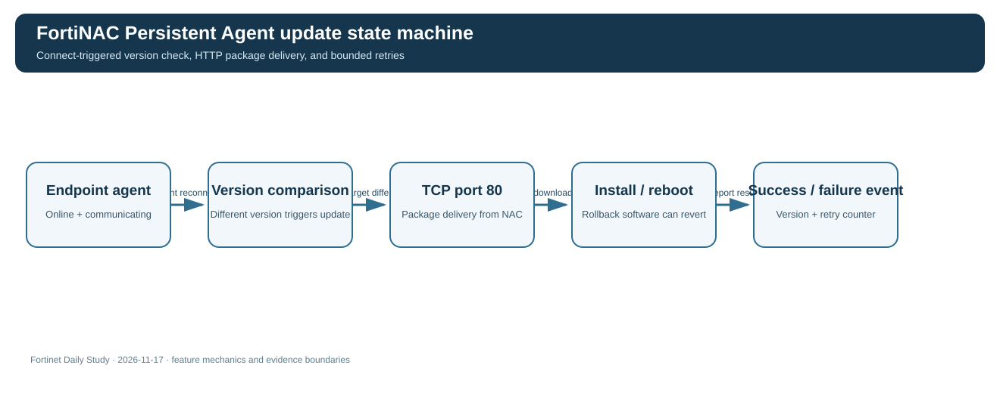
FortiNAC's global Persistent Agent update is connection-triggered. A host connects, the agent communicates with FortiNAC, and FortiNAC compares the installed version with the version selected in Agent Update. Any version difference can trigger an update; it is not a “newer only” comparison. That supports rollback, but it means the target version must be selected deliberately and coordinated with Endpoint Compliance Configuration.
The endpoint must be online and communicating, and it must reach TCP port 80 on the FortiNAC appliance for package delivery. A green agent icon and a successful Send Message test are useful communication checks, but they do not prove the package transfer completed. A client stuck on a loading screen can be blocked at the HTTP delivery stage. The Community scenario demonstrates this port-80 boundary and the AgentUpdate log sequence from needsUpdate through updateAttempt.
FortiNAC limits global update attempts per host. Once the maximum is reached, it sends no further update until the counter is reset or the maximum is increased. Reset Counter clears attempts for all hosts, but it does not re-update hosts that already succeeded. If only a few hosts failed, handle them individually. Reset counters only after fixing the cause; otherwise the same failure repeats. The guide documents an Agent Update Failure event when the maximum is reached; success events are disabled by default.
Endpoint rollback software is another hidden dependency. If the endpoint restores its original state after reboot, the agent can revert after an apparently successful installation. Disable that rollback behavior before testing. Also check whether the compliance policy selects Latest Persistent Agent; allowing a lower global version can create a loop in which registration later reinstalls the latest version.
Verify current and target versions, host communication, TCP/80 reachability, attempt counter, update event and version after reboot. A task sent by FortiNAC proves only that the workflow started; the post-reboot version proves that the update persisted.
Lesson 07 · FortiNAC-F
Dynamic Address Tags: endpoint identity becomes a live FortiGate policy object
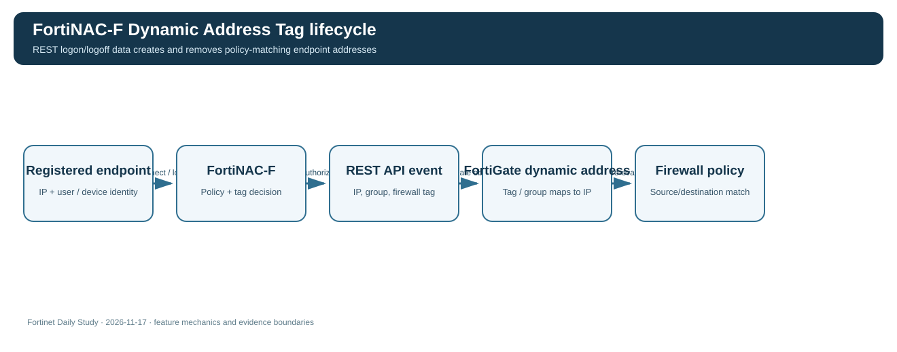
Dynamic Address Tag synchronizes FortiNAC-F endpoint identity into FortiGate policy objects. FortiNAC-F collects endpoint IP, group and firewall-tag data and sends it to FortiGate through the REST API. FortiGate maintains dynamic address objects for the IPs associated with a tag/group; firewall policies can use those objects as source or destination. When the endpoint logs off or disconnects, FortiNAC-F sends a state change and the mapping is removed, so the policy no longer matches that address.
Triggers include registered-device connection, user logon, IP change and device status change; logoff/disconnect removes the state. This is live identity, not a static group. Rogue or offline registered hosts do not match the policy path. Fortinet documents two integration methods: Connector-Based FSSO Tag uses an External Fabric Connector and defaults to port 8000; Dynamic Address Tag uses REST API integration at the root FortiGate/Security Fabric and defaults to port 8013. Choose one method consistently. FortiGate supports only one FSSO agent reporting a given endpoint IP; a second agent can overwrite the first agent's entry.
When a Collector Agent disconnects, FortiGate removes applicable SSO logins after 300 seconds. A brief communication interruption therefore may not remove the mapping immediately, while a sustained outage eventually does. VPN integrations also depend on RemoteAccess/syslog lifecycle and MAC discovery. A firewall tag may be applied on connect and removed after the disconnect event; inspect the actual event chain rather than assuming the tag engine is broken.
On FortiGate, inspect the dynamic-address list and expand the FortiNAC Tag section. A current mapping should show the endpoint IP; an address with no matching login can show a red exclamation mark. Use View Matched Addresses on the policy to confirm the intended endpoint is present. On FortiNAC-F, correlate host logon/logoff with tag/group assignment. For VPN cases, inspect FortinetVPN, RemoteAccess, SyslogServer and SSOManager debug. A REST event alone does not prove the firewall policy currently matches the address.
Lesson 08 · FortiAuthenticator
Certificate revocation: local CRL, imported CRL and OCSP responder
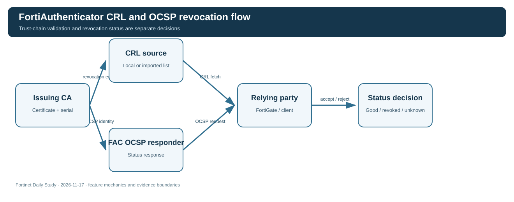
A certificate can chain to a trusted CA and still be revoked. FortiAuthenticator supports importing CRLs from other authorities, maintaining a local CRL for certificates issued by its own CA, and answering OCSP status requests. When a local CA revokes an end-entity certificate, the serial is added to the CRL associated with that issuer. Relying parties using file-based revocation checking need the updated CRL. Imported CRLs represent another CA's revocation state and must be refreshed from the relevant distribution point.
CRL is a list-based model: the relying party obtains a list and checks whether the issuer/serial is present. OCSP is a request/response model: the relying party asks a responder for one certificate's status. FortiAuthenticator's documented OCSP example uses TCP/2560. A FortiGate can reference the responder certificate and URL:
config vpn certificate ocsp-server
edit "FAC_OCSP"
set cert "REMOTE_Cert_1"
set url "http://172.20.120.16:2560"
next
endValidate the selected responder certificate, URL, DNS and TCP reachability. A trusted chain does not prove that revocation lookup is reachable or that status is good. Likewise, an imported CRL does not prove every client is using the current list.
FortiAuthenticator event ID 10121 records certificate-import activity. It can represent a successful manual CRL import, automatic trusted-CA CRL download, or an import/download error. Filter Log Access > Logs for 10121 and inspect issuer/message; the Community article recommends checking the CRL Distribution Point when import fails. The event proves import processing, not that an application handshake later accepted the certificate.
Revoked certificates remain in the CRL until expiry because relying parties still need the revocation record. A disabled delete control can therefore be expected. Test with a known-good and known-revoked certificate, and distinguish “good,” “revoked” and “unknown/unreachable.” Keep the same responder and trust dependencies reachable after HA failover.
Lesson 09 · FortiPAM
Cross-platform migration: private-data-encryption and restore compatibility gates
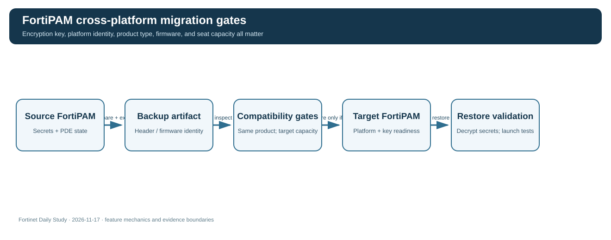
FortiPAM stores passwords and certificate private keys encrypted. The secure-storage feature uses a predefined private key by default; administrators can configure a custom private data encryption key (PDE) known only to them. The custom key is 32 hexadecimal characters and is required by another FortiPAM when restoring configuration data encrypted with it. All members of an HA pair must use the same key. The key is part of the recovery dependency set, not an incidental setting.
Cross-platform migration adds compatibility gates. The recent Community migration article says to disable PDE on the source before preparing the migration configuration, migrate only between identical product types (FortiPAM to FortiPAM, not FortiPAM to FortiSRA), confirm target user-seat capacity, and align the platform identifier in the backup header with the documented target mapping. Firmware version information need not be modified when source and target use the same release. Do not generalize this into permission to edit arbitrary backup headers.
Inventory source product type, model/platform identifier, firmware build, user count, PDE state and key custody. Preserve a backup before changing encryption state. Confirm the target is the same product type, has sufficient licensed seats and runs compatible firmware. If the documented path requires disabling PDE, do that on the source before creating the migration backup. Prepare the header only as directed, restore, and validate before cutover.
Do not use “the GUI accepted the backup” as the success criterion. Test representative encrypted secrets, private keys/certificates, launchers, user access, folder permissions and integrations that use stored credentials. In HA, verify key consistency and secret availability across members. If a restore produces missing or invalid secret material, stop before deleting or repurposing the source appliance. Keep the original backup, header, source/target versions and PDE state with the change record.
Lesson 10 · FortiSIEM
Collector HA: VRRP VIP ownership and Supervisor job redistribution
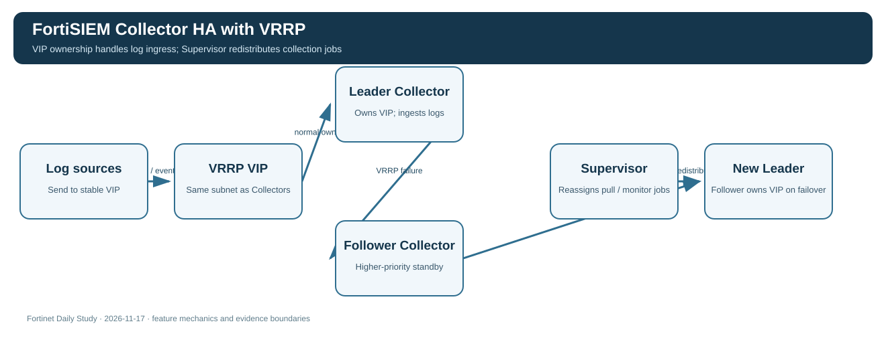
Collector High Availability preserves event ingress and Collector-assigned work when a Collector node fails. In the VRRP design, a Collector HA group has one Leader, one or more Followers and a virtual IP used by log sources. The VIP and Collectors must be on the same network. During normal operation the Leader owns the VIP and receives log traffic. The Supervisor separately distributes event-pulling and performance-monitoring jobs among Collectors in the group.
If the Leader node goes down, the eligible Follower with the highest priority becomes Leader and owns the VIP. Logs sent to the stable VIP then reach the new Leader. The Supervisor also redistributes event-pull and performance-monitoring jobs assigned to the failed Collector. A Follower failure does not own the VIP; its assigned jobs are redistributed to remaining Collectors. When it returns, it remains a Follower and jobs are redistributed across working members.
Create the group under Admin > Settings > System > Cluster Config. Select the Organization, choose VRRP, select Collectors, set the VIP/router ID, then edit each Collector's interface, role and priority. Only one Collector can be Leader; its priority should exceed the Followers. Run Test before saving. Cloud designs can use load balancers and have different failure behavior.
VRRP is node-failure detection, not proof that every process failure triggers takeover. If a process stops while the node remains up, VRRP may not trigger. With a load balancer, failover depends on its health algorithm. For event pulling, the App Server can redistribute a job when no task request arrives within ten minutes. These are separate control loops.
Verify /etc/keepalived/keepalived.conf for virtual_ipaddress, then use ip a to confirm VIP ownership. Use phstatus, df -h, targeted tcpdump and phoenix.log to investigate ingestion. The recent EPS=N/A Community case shows the evidence boundary: packets arriving do not prove parsing/Analytics insertion, but EPS=N/A does not prove no events. Confirm actual events in Analytics before restarting services or altering backend records.
Lesson 11 · FortiSASE
Split DNS and DNS redirection: choosing resolver and path
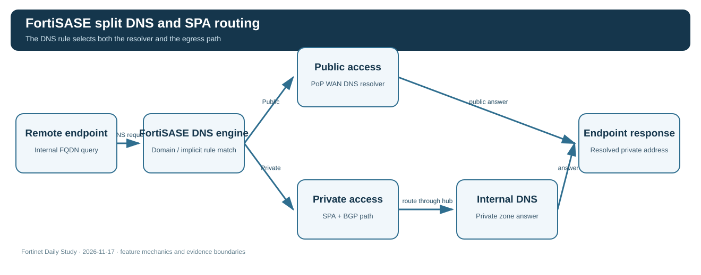
FortiSASE remote users need public resolution for Internet domains and internal resolution for private names. Implicit DNS rules provide default resolver behavior; Split DNS Rules selectively send specified internal domains to internal DNS servers. DNS redirection forwards endpoint DNS traffic to FortiSASE and selects a resolver based on domain. The rule determines both which server answers and how FortiSASE reaches it.
If the internal resolver is behind a Secure Private Access (SPA) hub, set Access Type to Private. FortiSASE sends the query through the SPA path using the configured BGP design. Public means the resolver is publicly reachable and the PoP sends the query out its WAN interface. A Community case describes the common failure: the internal DNS server is behind SPA, but the rule is set to Public, so the PoP uses the wrong egress path. In BGP-on-loopback designs, Private access type is particularly important because the PoP uses the loopback source for the private path.
Create a rule with primary/secondary DNS servers and the internal suffixes. If regional DNS servers exist, PoP DNS override can direct users to a closer resolver. The SPA hub must be configured and the server reachable over the overlay. If the hub's FortiGate policy protects the resolver, explicitly permit required DNS traffic from the PoP. A DNS rule does not create firewall permission.
Security inspection can still block a correctly resolved name. If Web Filter or DNS Filter blocks Newly Observed Domain, use a narrow exception where justified. FortiGuard DNS does not support DNS over TCP; for TCP/53 or DNS-over-TLS TCP/853, use a resolver supporting that transport. Verify domain match, Access Type, BGP/SPA route, Private Access policy and DNS answer separately. A correct answer proves name resolution, not application reachability or authorization.
Lesson 12 · Secure SD-WAN
TWAMP Performance SLA: probe protocol, participants and route eligibility
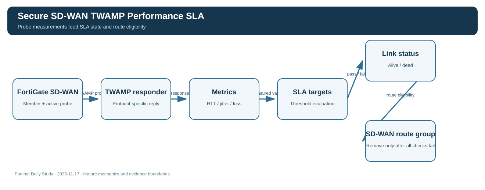
A Performance SLA combines a health check, participating SD-WAN members, target thresholds and resulting link status. A health check defines probe mode, protocol and server. Active mode sends probes; passive mode measures traffic sessions observed by firewall policies; prefer-passive uses passive measurements when available and falls back to active behavior. The probe must represent the service/path you intend to evaluate.
FortiOS supports ping, TCP/UDP echo, HTTP/HTTPS GET, DNS, TCP connect, FTP and TWAMP among other protocols. The GUI exposes a subset; TWAMP is configured through CLI using set protocol twamp. The remote endpoint must provide the appropriate TWAMP response. A regular exec ping is not a TWAMP test and does not prove the SLA probe works.
Participants are SD-WAN member interfaces. They need not belong to the same zone, but should be limited to interfaces expected to carry the service. A corporate-resource check that should use overlay tunnels should not include an unrelated Internet underlay. Latency, jitter and loss are evaluated against SLA targets. If a member has multiple health checks, all configured checks must fail before routes are removed from the SD-WAN load-balancing group.
A Community case shows a pingable target marked dead because the default probe timeout was 500 ms while the path RTT was about 700 ms. Tune timeout to measured latency, not to an arbitrarily large value that masks loss. Use diagnose sys sdwan health-check to inspect per-member state, packet loss, latency and jitter. Use exec ping-options interface <member> as a separate reachability comparison, and capture TWAMP packets when protocol behavior remains unclear.
Check responder availability, route, source, participants, protocol and timers before changing thresholds. If two servers are configured, FortiGate uses the first and falls back to the second when it is unavailable. A manual ping proves ICMP reachability from that path; only a successful configured TWAMP exchange proves the TWAMP SLA probe is working.
Graded examination · 50 MCQs
Instructions: choose one answer per question, then select Grade exam. Every option receives an explanation after grading. Scenarios are grounded in Fortinet Community troubleshooting behavior and today's primary feature guides. Correct-answer positions are mixed.
50 questions · 4 choices each · 200 feedback entries.